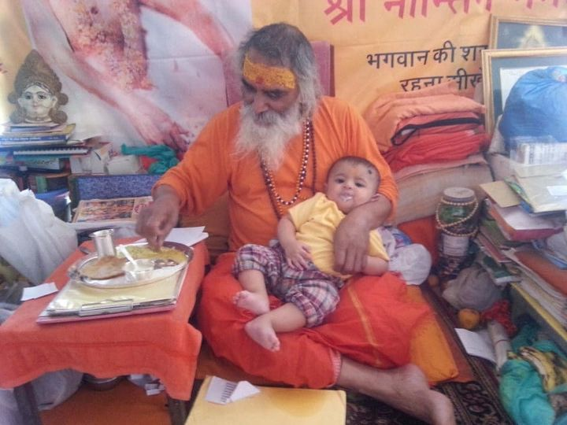
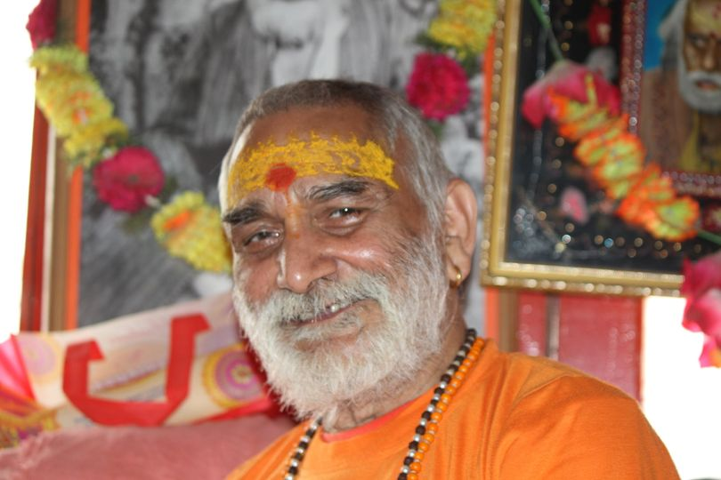
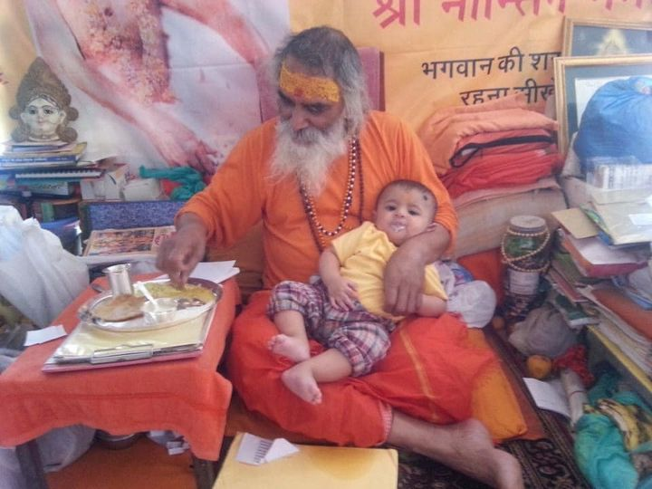
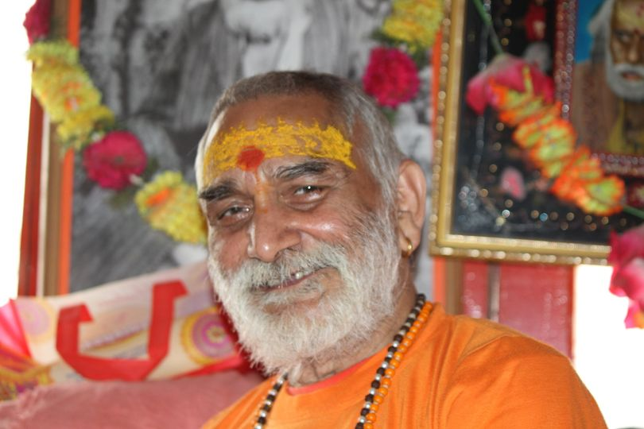
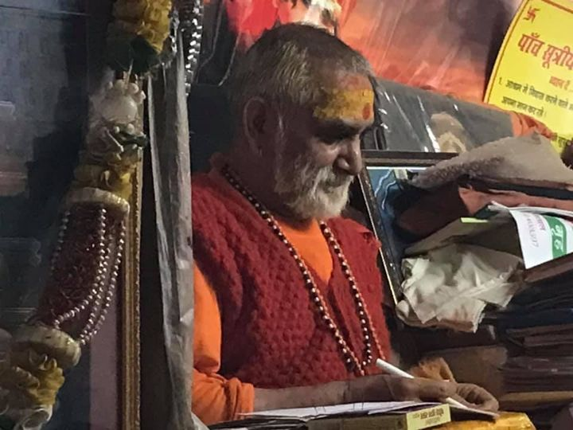
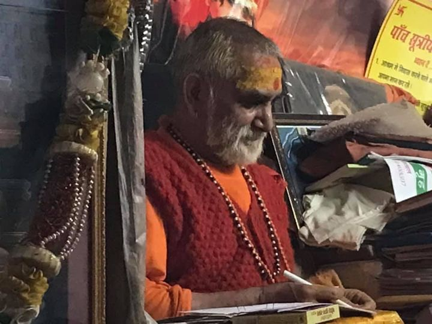

ॐ पारे ब्रह्मणि मग्नाय, धीराय मित भाषिणे ।
द्वैता द्वैत बोधाय गुरूवे श्री नान्तिने नमः ॥१॥
विभेति यस्मात् जराः मृत्यु कालो न कलयते क्वचित् ।
तस्मै योगीश पूज्याय गुरूवे श्री नान्तिने नमः ॥२॥
माया मात्रमिंद सर्व, दृश्यते श्रूयते हि यत् ।
ब्रह्मण्येव सदा रमते, गुरूवे श्री नान्तिने नमः ॥३॥
अध्यारोपा पवादभ्यां, येन ब्रह्मवै चिन्तितम् ।
समं पष्यति सर्वत्र, गुरूवे श्री नान्तिने नमः ॥४॥
तस्यै वांशहि जीवोऽयं, मायया बहुरूप याया
काय क्लेषान्वहुन्भुक्ते, गुरूवे नान्तिने नमः ॥५॥
गुरोः शिक्षामि माँ शुद्धाँ यः चित्ते धारयिस्यति ।
न कदापि जगज्जालैः मोहमेस्यति सः नर ॥६॥
“परमारथ के कारने साधुन धरा शरीर”
जन्म स्थान : परमपूज्य नान्तिन महाराज जी के जन्मकाल को निश्चित करना कठिन हैं, फिर भी प्राप्त उल्लेखों एवं
लोकवाणी के आधार पर परमपूज्य श्री 108 नान्तिन महाराज का जन्म मध्य प्रदेश के मुरैना जिलान्तर्गत पोरसा तहसील
में चम्बल नहर के किनारे बसे एक गांव 'रूअर' में एक ब्राह्मण परिवार में हुआ । इनके पिता का नाम पंडित श्यामलाल
तथा पुण्यशीला माता का नाम, देवी सुभद्रा था।
इनके भाई, श्री रामेश्वर दयाल तथा एक छोटी बहन देवी रामप्यारी थी। छोटे भाई, श्री रामेश्वर दयाल ने 20 वर्ष की
अवस्था में ही सन्यास ले लिया और बाबा राघवदास के नाम से प्रसिद्ध हुए| पूज्यपाद नान्तिन महाराज जी घर छोड़कर
अयोध्या चले गये और वहाँ से उत्तराखण्ड की पावन भूमि पहुँचकर उसे ही अपनी कर्मस्थली एवं तपस्थली बनाया।
उत्तराखण्ड आगमन एवं नान्तिन बाबा जी का नामकरण: लगभग सात वर्ष की अवस्था में पूज्यपाद नान्तिन महाराज का
उत्तराखण्ड की पावन भूमि में पदार्पण हुआ। कहा जाता है कि घर छोड़कर पहले वे अज्ञात पथ के पथिक के रूप में सीधे
अयोध्या के हनुमानगढ़ी पहुँचे तथा कुछ काल तक हनुमान जी की पूजा-अर्चना और आराधना में लीन रहे, हनुमान गढ़ी के
महन्त जी ने बुद्धिजीवी और तपस्वी समझकर इस 7 वर्ष के बालक को आश्रम का भार (चाभी, ताले) सौंप दिए। 2-4 दिन बाद
बालक ने सोचा, घर छोड़कर प्रभु चिन्तन के लिए निकला, यहाँ आकर प्रभु ने हमें ताला चाभी में फँसा दिया, यह ठीक
नहीं है। बालक चाभी का गुच्छा पास के तालाब में फेंक कर आश्रम छोड़ चल दिया, और विचारों का चिन्तन न करके उसे
केवल बद्रीनारायण स्वामी का ध्यान आया और बद्रीविशाल दर्शन के लिए चल पड़ा। श्री बद्रीविशाल के दर्शनों से
कृतार्थ होकर तथा उनका आशीर्वाद प्राप्त कर वे बागेश्वर के शिव मन्दिर में पहुंच गये, जहाँ मन्दिर के सन्त
उन्हें देखकर, श्रद्धा से अभिभूत हो उठे। भोजन पानी व आश्रय दिया। यहाँ कुछ दिन ठहरने के उपरान्त, वे पिथौरागढ़
के आँवलाघाट नामक स्थान पर रामगंगा नदी के किनारे एक निर्जन गुफा में जाकर रहने लगे। वहाँ पर जंगल में घास काटने
वाली औरतों ने उन्हें देखा। इनकी बाल्यावस्था देखकर वे अत्यंत आश्चर्यचकित हुई और भावुकता और कौतुहलवश इन
महिलाओं ने गाँव में जाकर यह सूचना दी कि 'एक नान्तिन जोगी गुफा में बैठा है। कुमायूँ के पहाड़ों में छोटे
बच्चों को 'नान्तिन' कहकर पुकारते हैं। उसी 'नान्तिन' शब्द के सम्बोधन से परमपूज्य महाराज का नाम 'नान्तिन'
पड़ा। इस प्रकार आँवलाघाट की महिलाओं के नामकरण से ही, नान्तिन बाबा जन-जन में विख्यात हो गये।
पूज्यपाद नान्तिन बाबा जी की कृपावत्सलताः 'दयामय श्री गुरुदेव भक्तावली ' कृति में संकलित संस्मरणों में,
यत्र-तत्र - सर्वत्र पूज्यपाद नान्तिन महाराज की कृपावत्सलता के दर्शन होते हैं। कहा जाता है कि उन्हें आठों
सिद्धियां प्राप्त थीं और समय-समय पर अपने भक्तों, श्रद्धालुओं के मध्य, वे इनके रहस्यों का बोध भी कराया करते
थे । वे अपने भक्तों को भौतिक संसार से दूर रहकर, आत्म-दर्शन की ओर उन्मुख होने के लिए प्रेरित किया करते थे।
उनका कहना था कि जो प्राणी सांसारिक माया मोह में फंसा हुआ है तथा द्वेष, दुर्भावना, दुराग्रह, ईर्ष्या, छल-कपट
एवं कुंठा जनित दोषों में जकड़ा हुआ है, वह अपने जीवन के अन्धकार रूपी आवरण से बाहर नहीं आ सकता । अतः इन
दुर्गुणों, विकारों से सदैव स्वयं को दूर रखना ही मानव जीवन के लिए कल्याणकारी है। श्री 108 नान्तिन महाराज जी
अपनी बाल सुलभ लीलाओं, प्रवृत्तियों एवं क्रिया-कलापों के लिए अपने भक्तों के बीच अत्यन्त लोकप्रिय थे । अनेक
भक्तों ने अपने संस्मरणों में ऐसी घटनाओं का विस्तार से वर्णन किया है, क्योंकि अपनी शंकाओं, जिज्ञासाओं के
समाधान के दौरान उन्हें पूज्य गुरुदेव की बालसुलभ लीलाओं को निकट से देखने का अवसर प्राप्त हुआ है। उनकी बच्चों
जैसी बोली व भाषा, उनका स्नेहिल स्वभाव भक्तों को बरबस अपनी ओर आकर्षित कर लेता था । जैसा नाम, वैसा गुण, वैसा
स्वभाव । पूज्य नान्तिन बाबा का मानवतावादी दृष्टिकोण था । सत्संग के दौरान वह भक्तों से पूछ बैठते थे कि 'आगे
आने वाले समय में मानवीय मूल्यों का क्या होगा?'
पूज्य नान्तिन महाराज पर्वतीय गुफाओं में, निर्जन वनों में साधना किया करते थे, इसलिए प्रकृति और ईश्वरीय
संरचनाओं को बहुत निकट से देखा करते थे तथा अपने स्नेह एवं वात्सल्य की वर्षा सब पर समान रूप से किया करते थे।
अपने औषधीय ज्ञान द्वारा उन्होंने हजारों निर्बल, असहाय लोगों को असाध्य रोगों से मुक्ति दिलाई। यही कारण है कि
श्रृद्धालु भक्तजन उनकी स्नेहमयी छवि का दर्शन करने, आशीर्वाद प्राप्त करने उनकी ओर खिंचे चले आते थे। परमपूज्य
गुरुदेव कहा करते थे कि ईश्वर को पाने के असंख्य मार्ग हैं। उनके साथ हमें जो मार्गदर्शन मिला उसके मूल में भी
ध्यान ही है। पूज्य गुरुदेव ने जीवन भर कोई प्रवचन नहीं किया। उन्होंने हजारों साधकों को जप व ध्यान पथ का पथिक
बनाया और गंतव्य तक जाने का सामर्थ्य भर दिया। जो ज्ञान प्रवचनों से नहीं मिलता वह ज्ञान गुरुदेव के पास मौन
होकर बैठने से सहज ही प्राप्त हो जाता था। हजारों शब्द, जिस साक्षात्कार को नहीं करा पाते वह बिना शब्द के,
ध्यान, सद्गुरुदेव की एक कृपादृष्टि से भक्तजनों की झोली में स्वतः आ जाता था। मौन की भाषा को समझना, ईश्वर की
ओर बढ़ने वाला पहला कदम होता है ।
पूज्य नान्तिन बाबा जी के संस्मरणः पूज्य नान्तिन महाराज जी के सानिध्य में रहे श्री भुवन जोशी ने बताया कि
पूज्य गुरुदेव की असीम कृपा से, सन् 1984 में 6 माह उत्तरकाशी में महाराज जी के साथ उन्हें एकान्त में रहने का
सुअवसर मिला। यहीं गुरुदेव ने हमें अपने बचपन की कथा बतायी। उन्होंने बताया कि पहले हम चम्बल के पास एक गाँव में
रहते थे। एक समय ऐसा आया जब मेरी उम्र लगभग 4 वर्ष की थी। उस समय प्रयागराज का कुम्भ मेला आया। मेरे बड़े भाई
जिनकी उम्र उस समय 12 वर्ष की थी। मेरे पिताजी श्री सूर्य भगवान का हठ योग किया करते थे अर्थात् गँगा जी में
गर्दन तक पानी में खड़े रहते थे। वह प्रातः 4 बजे से सायं तक गँगा जी में खड़े रहते थे। सभी ऋतुओं में (गर्मी,
जाड़ा, बरसात) सायं वह गँगा जी से निकलकर, सन्ध्या पूजन में लग जाया करते थे। मेरे पिताजी गृहस्थ होने के साथ ही
एक त्रिकालदर्शी सन्त थे। एक दिन पिताजी ने मेरे भाई से कहा कि तुम अब कुम्भ मत जाओं, घोर अनिष्ट योग है, पर
मेरे भाई नहीं माने। उन दिनों कुम्भ प्रयाग के मेले में, हैजे से लगभग दस हजार लोग मर गए थे। उसी में पूज्य
महाराज जी के भाई की भी मृत्यु हो गयी। जब यह मृत्यु का समाचार महाराज जी की माता जी को मिला तो उनसे यह दुख
देखा नहीं गया और पुत्र के वियोग में वह भी स्वर्गवासी हो गयी। अब पिताजी को बड़े भाई की तेरहवीं करनी पड़ी।
चौदहवें दिन पिताजी की मृत्यु हो गयी और अब मैं स्वतन्त्र हो गया। उस दिन के बाद से, घर बार सब कुछ छोड़कर, बाबा
बन गया। चम्बल के पास के गाँव की जगह ठीक नहीं है, ऐसा महाराज जी के पिता जी कहा करते थे। कुछ समय बाद महाराज
चम्बल से ग्वालियर चले आये। यह जगह बहुत छोटी थी इसलिए महाराज जी ने यह जगह छोड़ दी। 6 वर्ष की उम्र में महाराज
अयोध्या हनुमान गढ़ी मन्दिर में एक सिद्ध महन्त के पास रहे । वहाँ उन महन्त ने इस बच्चे को मन्दिर आश्रम की चाभी
सौंप दी और सभी प्रकार का ज्ञान दे दिया। उस मन्दिर के आश्रम की चाभी पूज्य महाराज जी के पास रहती थी। वहाँ एक
वर्ष तक उन प्रतिष्ठित सन्त ने इस अवधि में हमें जप, तप, ध्यान सभी कुछ सिखाया, पर मेरी कुछ समझ में नहीं आया।
एक दिन अचानक क्रोध आया कि जिस शान्ति हेतु घर-बार छोड़ा है, यहाँ तो बन्धन इसलिए उन प्रतिष्ठित सन्त को बिना
बताये चला आया ।
कई दिनों तक भूखा प्यासा पैदल चलता रहा। अचानक रात 'में चौराहे पर, कोई एक व्यक्ति पीतल की विष्णु भगवान की
मूर्ति बनाकर बेच रहा था। उस मूर्ति को देखकर मेरे मन में विचार आ कि यह भगवान थोड़े ही हैं। यह तो पीतल की बनी
मूर्ति है। उस मूर्ति को छोड़कर एक कोस यानी तीन किमी. आगे चला आया, जब फिर भी मन नहीं माना तो पुनः उसी स्थान
पर गया जहाँ मूर्ति देखी थी। उसके लालच में पुनः वहीं वापस लौट आया और मन में नकारात्मक विचार आने के बाद भी, वह
मूर्ति ले ली। सूर्यास्त होने के बाद, जब जंगल में आया तो उस समय रात्रि हो चुकी थी। वहीं रूक गया, एक पीपल-बड़
के पेड़ के नीचे पदमासन लगाकर बैठ गया, क्योंकि दिन भर पैदल चलते-चलते थकान महसूस हुई इसीलिए कुछ ही समय में
नींद की झपकियां आने लगीं। तभी विष्णु भगवान अपने चतुर्भुजी रूप में प्रकट हुए कहा कि "बच्चा सो मत" - "बच्चा सो
मत।" इस तरह भगवान विष्णु जी ने हमें ढाई वर्ष तक बिना कुछ खाये पिये-सोये ऐसे ही अपने पास रखा। इस ढाई वर्षों
में विष्णु भगवान ने हमें जप-तप-ध्यान यह सभी चीजें बतायी व सिखायी और इतनी कम उम्र में उन्होंने हमें 52
सिद्धों के दर्शन कराये। साढ़े सात वर्ष की उम्र में, भगवान विष्णु जी ने मुझसे कहा कि अब तुम बाबा हो गए हो।
नेपाल जाओ, वहाँ माया मुच्छन्दरनाथ, जो पूज्य श्री गोरखनाथ जी के गुरू हैं, उनके दर्शन करो। वह बर्फीली पहाड़ी
नेपाल में मिलेंगे। इस प्रकार फिर हम माया मुच्छन्दरनाथ के दर्शन के लिए नेपाल चले गए। ढाई किमी. खड़ी चढ़ाई तय
करने के पश्चात्, जैसे ही आधी चढ़ाई चढ़े थे, तभी ऊपर से मायामुच्छन्दर नाथ जी की आवाज आयी कि अब तुम बड़े हो
गये हो, लंगोटा पहना करो, क्योंकि इसके पूर्व महाराज जी बिना वस्त्र धारण किए ही रहते थे। महाराज कुछ चढ़ाई चढ़ने
के पश्चात्, अचानक फिसले तथा सवा किमी. तक लुढ़कते - लुढ़कते नीचे कहीं किसी खायी में आ गिरे, जिससे उन्हें बहुत
चोट आयी तथा शरीर के जगह-जगह से खून बहने लगा। नेपाल में सपना हुआ कि एक प्रतिष्ठित सन्त जो बालक रूप में है,
ऊँची चोटी से नीचे गढ्ढे में गिरा पड़ा है। उसे अपने घर ले आओ। तो वहाँ के गाँव वाले ढोल नगाड़े बजाते हुए, मुझे
डोली में बैठाकर अपने घर ले आये। महाराज उस घर में सात दिनों तक रहे। तभी दूसरे गाँव वालों को सपना हुआ तो दूसरे
गाँव वाले उन्हें अपने घर ले आये । इस तरह तीसरे गाँव में स्वप्न हुआ । महाराज 2-2, 3-3 दिन एक गाँव में रहते,
यह विष्णु भगवान की कृपा थी ऐसा महाराज जी कहते थे। हम एक वर्ष में त्रियुगी पीपल के दर्शन के लिए बागेश्वर में,
श्री बागनाथ जी मन्दिर के पास गंगा पार प्रदर्शनी मैदान में पहुँचे जहाँ त्रिजुगी (तीन युग) पीपल के दर्शन किये।
वर्तमान समय में बागेश्वर, बागेश्वर जनपद में श्री बागनाथ महादेव जी का मन्दिर है । आते समय घायल अवस्था में,
नेपाल से भारत की सीमा में डोली से आये । इस तरह बागेश्वर से लोहार खेत के रास्ते होते हुए, पकुँआ नामक स्थान
में पहुँचे । महाराज ने पकुँआ के पास एक गाँव में कोई एक घर बताया जो गाँव के प्रधान का था। उनके घर रूके, जहाँ
मेरी तबियत बहुत ज्यादा खराब हुई। हाथ-पाँव गलने लग गए थे। उनके सिर में जगह-जगह घाव थे। महाराज जी ने गाँव
वालों से कहा कि अब मैं मरने वाला हूँ । मुझे शून्य तापमान में ले चलो। पकुआ नामक गाँव के प्रधान ने पूज्य
महाराज जी के लिए निगाली (बाँस की छोटी प्रजाति है) उसकी झोपड़ी बनायी तथा महाराज को वहाँ ले आये। जहाँ पर
नान्तिन बाबा की कुटिया है वहाँ शून्य डिग्री तापमान है। उस स्थान पर पूज्य श्री पायलेट बाबा के शिष्यों ने,
पत्थरों को काटकर आश्रम बनाना चाहा तो वहाँ एक काला विषधर सर्प निकला। पूज्य नान्तिन बाबा की तपस्थली जानकर
पायलेट बाबा के शिष्यों ने वह जगह छोड़कर कहीं अन्य जगह आश्रम बना लिया। छह महीने महाराज उसी स्थान पर रहे। वह
प्रधान की पत्नी महाराज जी को पटखाट (लकड़ी का तख्त) के नीचे सूप में कुछ घास रख देती थीं। महाराज जी उसमें
दीर्घशंका करते। महाराज कहते थे कि मैंने बुकौल (दो पत्थरों को टकराकर चिनगारी आना) की प्रथा द्वारा घास से
जगह-जगह अपने गाँठों को जलाकर जो बाद में पककर घाव बन गये। महाराज कहते हैं कि यह विष्णु भगवान की पद्धति जिसे
श्री विष्णु भगवान ने मुझे बतायी थी। ठीक रात्रि साढ़े बारह बजे, भगवान शिव जी के गण आये कहा बाबा तुमने हमें
मार दिया है। महाराज कहते हैं, गणों का शरीर बिल्कुल मनुष्य के शरीर जैसा था। पर हाथ सिर में दो नाक और किसी का
सिर नहीं। हजारों गण आये, कहते हैं हमारा वास शरीर के भिन्न-भिन्न अंगों पर था। बाबा तुमने उसे जला दिया है। अब
हम वापस जा रहे हैं। फिर भगवान शिव जी डमरू बजाते हुए आये, अब महाराज जी का शरीर स्वस्थ होने लग गया, फिर पकुँआ
में, शिव जी ने महाराज को दर्शन दिए। कहा, “बाबा अब तुम शीघ्र कुकुड़ामाई जाओ।" हम बागेश्वर से बागनाथ होते हुए,
कुकुड़ामाई पहुँचे।
महाराज कहते हैं कि कुकुड़ामाई में मैंने 28 दिनों तक तपस्या की। 28वें दिन महाराज को बहुत क्रोध आया कि तू ढोंग
करती है तू ढोंगी है। मैं लोगों से कहूँगा कि यहाँ कोई न आये । हम आज चले जायेंगे। महाराज कहते हैं जब सूर्योदय
हो रहा था। हम नहाकर आये । जहाँ हमारा आसन था, वहाँ एक बड़ा गिरगिट देखा , जिसे पहाड़ में ग्वाँड़ कहते हैं।
छिपकली का बड़ा रूप इतना डरपोक कायर होता है कि आदमी की चाल को देखकर डर जाता है। वह गिरगिट हमें घूर घूर कर देख
रहा था। मैंने उसे भगाने के लिए ताली बजायी. वह नहीं भागा, फिर कनस्तर बजाया फिर भी नहीं भागा तो मैंने एक कंकड़
लेकर उसके सिर पर मारा, तब भी नहीं भागा तो मैंने कहा, देवी होती तो दर्शन देने का ढंग कुछ और ही होता तुम देवी
भी नहीं हो। अब तुम यहाँ से चली जाओ । हमें सन्ध्या पूजन करने जाना है। ऐसा महाराज जी ने कहा, मैं आसन छोड़कर
नीचे चला गया। महाराज कहते हैं जब हम सन्ध्या पूजन करने वाले थे। उसी समय जिस तरह कोयले के ऊपर राख पड़ी होती
है। ऐसे रंग की माँ ने साड़ी पहन रक्खी थी। चतुरभुर्जी सुन्दर रूप में, कुकुड़ा मईय्या ने हमें दर्शन दिए। कहा,
“बाबा तुम्हें क्या चाहिए, माँगों" मईय्या ने कहा, "बाबा तुम्हें धन, यश, सिद्धि ।" और न जाने क्या-क्या ? हमसे
माँगने के लिए कहा, हमने मना कर दिया, तुम गजब के बाबा हो । मईय्या ने कहा, "अब जब मैं आ ही गयी हूँ तो हमारा
आना व्यर्थ नहीं होता, कुछ माँगों ।" तब महाराज जी ने कहा कि विष्णु भगवान की भक्ति मुझ पर सदैव बनी रहे ।
साथ-साथ मईय्या ने यह भी कहा कि बाबा तुम वर्ष में दो नवरात्रियाँ किया करो। इस बार आने वाली चैत्र की नवरात्रि
में, हवन-पूजन व भण्डारा करो। महाराज कहते हैं कि हमने मईय्या से कहा, "माँ हम स्वतन्त्र रहने वाले हैं। इस माया
जंजाल में नहीं पड़ना चाहते ।" पुनः मईय्या ने कहा कि चैत्र की नवरात्रि करो। मैं स्वयं पूजन भण्डारे की
व्यवस्था करूँगी, पर हमने मना कर दिया। पुनः मईय्या ने कहा कि बाबा तुम जब यहाँ आया करो तो केवल घंटिया ही बजा
दिया करो। घंटियों से ही मैं व मेरे साथ की देवियाँ सन्तुष्ट हो जाया करेंगी। महाराज जी ने यह भी मना कर दिया।
मईय्या ने अन्त में कहा बाबा तुम्हें मेरी बात माननी ही पड़ेगी और माँ वहाँ से अन्तर्ध्यान हो गयी। फिर महाराज
कहते हैं कि हम जप, ध्यान करने लगे। थोड़ी देर बाद, हमारे सामने एकदम श्यामवर्ण काली चंचल-चपल देवी आ गयी । कहने
लगी, "बाबा तुमने मुझे याद किया, मैं आ गयी हूँ तुम कुछ माँगो । जो-जो बातें मईय्या ने कही थीं वही सभी कुछ
बातें माँ काली ने कही। मैंने पहले जैसे ही मना कर दिया। एक बात जो पहले कुकुड़ा मईय्या से भिन्न थी। वह यह कि
बाबा हमें बलि दिया करो। महाराज जी ने कहा, "हम वैष्णव हैं हिंसा नहीं करते।" तब महाराज जी ने हिंसा / बलि न
करने पर काली माँ ने कहा कि तुम नींबू काटकर चीनी मिलाकर मेरा भोग लगा दिया करना। मेरा उसी में वास है। मैं उसी
में प्रसन्न हो जाती हूँ, ऐसा महाराज कहते थे। इसके बाद महाराज जी चल दिए ।
साढ़े नौ वर्ष की अवस्था में महाराज पुनः दूसरी बार बद्रीनाथ गए जाते समय रास्ते में, अलकनन्दा में एक गुफा में
रात्रि निवास किया| महाराज जी को प्रातः गुफा के बाहर एक बूढ़ा ब्राह्मण मिला। उसने एक पुस्तक स्वयं अपने हाथ से
दी। यह हाथ से लिखी हुई पुस्तक सप्तसती महामंत्र है। वह पुस्तक गुरुदेव भगवान ने बाद में शंकर जी महाराज एवं
मगनानन्द सरस्वती जी कानपुर गंगा किनारे सतसईय्या घाट में रहते थे, उन्हें दी है। फिर बूढ़े ब्राह्मण ने कहा कि
स्वामी जी इसका पाठ मईय्या को सुनवाया करों। उसके बाद इतना कहकर वह बूढ़े ब्राह्मण अचानक अंतर्ध्यान हो गए तो
महाराज कहते हैं कि उन बूढ़े ब्राह्मण को ढूढ़ने के लिए पूरा दिन लगा दिया। उन्हें कई कोसों तक ढूँढा, उस किस्म
का कोई बूढ़ा ब्राह्मण नहीं मिला। महाराज कहते हैं कि वह तो साक्षात् मईय्या थी। जो हमें ब्राह्मण के रूप दर्शन
देने आयी थी।
उत्तरकाशी की ही बात है। एक दिन मैंने महाराज जी से पूछा, “ महाराज यह कुकुड़ा मईय्या कौन थी”? महाराज कहते हैं
कि यह दक्षिण भारत के एक राजा की पुत्री थी। यह उत्तराखण्ड की यात्रा पर निकली, फिर वह उत्तराखण्ड के बाघनाथ
(बागेश्वर) के ऊँची चोटी पर तपस्या करने लगी । यह नर से नारायणी बन गयीं थी। राजा की पुत्री जिनका नाम कुकुड़ा
देवी था, जो उसी नाम से विख्यात हुई। पूज्य गुरुदेव कहते थे कि यह माँ थोड़ी सी पूजा करने से प्रसन्न हो जाती
है। नर भगवान देर से समझते हैं । मईय्या मुसीबतों का निवारण तुरन्त कर देती है ।
महाराज कहते हैं कि सन् 1901 की बात है, मैं कैलास मानसरोवर की यात्रा पर गया था । वहाँ बर्फ पर चलने से हमारे
पैर खराब हो गये, वापस आते-आते बेरीनाग पहुँचे। वहाँ पहुँचने के बाद आगे नहीं चल पाये। महाराज ने बेरीनाग में
पाँच फुट गहरा गड्ढा खुदवाया। उसमें वह खड़े हो गए फिर चारों ओर से मिट्टी पटवायी, उसके ऊपर चारों तरफ आग जलवा
दी। महाराज जी एक हफ्ते उस गड्ढे में रहे। जिससे महाराज जी के शरीर का शोधन हुआ। उसके बाद महाराज जी भद्रकाली
गुफा में सात दिनों तक रहे। महाराज कहते थे कि वहाँ उस गुफा में मणि वाले साँप लटके रहते हैं, चारों तरफ से
उजाला ही उजाला रहता था।
पंच दशनाम जूना अखाड़ा बागनाथ बागेश्वर में नान्तिन महाराज वायु वेग से उड़ते दौड़ते सरयू त्रिवेणी स्नान करने
आते थे। उनके तेजस्वी स्वरूप भक्ति साधना अलौकिक लीला से सम्पूर्ण बागेश्वर क्षेत्र वासी प्रभावित थे। महाराज जी
के दर्शनों के लिए कुकुड़ामाई में भीड़ थी। जिनको महाराज दर्शन देना चाहते, उसे दर्शन हो जाते। जिसे दर्शन देना
नहीं चाहते, तब महाराज कहीं कौवा, हिरन, शेर का रूप धारण कर जंगल भाग जाते या पेड़ों में चढ़कर अन्तर्ध्यान हो
जाते। जिसे दर्शन होते, उनकी मनोकामना पूरी हो जाती। जब नान्तिन बाबा पूजा नौरात्रियां भण्डारा करते, चाहे
हजारों की संख्या में लोग आते, सब तृप्त हो जाते। ज्यादा भीड़ होने में भी अन्तर्ध्यान हो जाते।
श्री नान्तिन बाबा 40 वर्ष कुकुड़ामायी में साधनारत रहे। प्रातः 2 बजे से 4 बजे के बीच अकस्मात् सरयू स्नान कर
वायु वेग से आँखों से ओझल होकर कुकुड़ामाई चले जाते । पंचदशनाम जूना अखाड़ा महन्त श्री गंगा गिरि जी महाराज ने
अपने साधु समुदाय को कुकुड़ामाई भेजा । साधु लोगों ने महन्त जी को सूचना दी कि नान्तिन बाबा तो दिन-रात
कुकुड़ामाई छोड़ते ही नहीं| कुछ साधु संत कुकुड़ामाई में रहने लगे । जो उन दिनों वहाँ महाराज जी की नित्य नई-नई
लीलायें देखते थे।
यह पवित्र धाम कुकुड़ामाई, बागेश्वर से, लगभग 8 किमी. ऊँची चढ़ाई पर स्थित है। फिर एक समय में सरयू स्नान व
बागेश्वर प्रवास यह कोई अलौकिक संत हैं। यदि ये सन्त हमारे समुदाय में मिल जाते तो पंच दशनाम जूना अखाड़ा
बागेश्वर का नाम हो जायेगा। बहुत दिनों के अथक प्रयास के बाद, सब साधु समुदाय की मनोकामना पूरी हुई। ब्रह्म बेला
में महाराज को पंच दशनाम जूना अखाड़ा बागेश्वर वालों ने अपने संगत में बैठा लिया। महाराज जी से पूछा गया
तुम्हारा गुरू कौन है? तब महाराज ने कहा मेरे गुरु विष्णु भगवान! जब तक महाराज जी अखाड़े में रहे। वहाँ अलौकिक
लीला होने लगी। जो दीन-दुखी उनके दर्शन करते तत्काल उनकी मनोकामना पूर्ण होती । पंचदशनाम जूना अखाड़ा बागेश्वर,
के श्री महन्त गंगा गिरी जी महाराज जी ने जबरन अपने समुदाय में मिलाकर पूज्य महाराज जी को भगवा वस्त्र पहना
दिये, तथा महाराज जी का नाम सिद्ध गिरि रखा। इस प्रकार पूज्य नान्तिन बाबा जी के सन्यास (सन् 1942 में) गुरू
श्री महन्त गंगा गिरी जी महाराज, पंच दशनाम जूना अखाड़ा 14 मढ़ी बागेश्वर बने| सम्पूर्ण अखाड़ा समुदाय व बागेश्वर
के सैकड़ों भक्त समुदाय पूज्य गुरुदेव नान्तिन महाराज के पास आया जाया करते थे। महाराज जी रात्रि 2 बजे से जप
ध्यान करते। साधु समाज का मार्गदर्शन कर कुकुड़ामाई ही वास करने लगे। वहाँ प्रतिदिन नई नई अलौकिक चमत्कारिक
घटनायें देश के आये कोने-कोने से हर भक्तजनों को देखने को मिलती थी।
पूज्य नान्तिन बाबा जी की अनगिनत प्रत्यक्ष लीलायें जिनमें ‘बिरला ग्रुप के जुगल किशोर बिरला जी का टूटा हुआ पैर
स्पर्श मात्र से ठीक करना’, ‘जर्मनी के किसी व्यक्ति को उसके सपने में अपने हाथ से पता लिखे हुए पत्र को
पहुँचाकर भारत बुलाना’, ‘जंगल में हाथियों को आदेश देना’, ‘भक्तों के असाध्य रोगों को सरलता से दूर कर देना’,
आदि में से कुछ का उल्लेख डॉ सुरेन्द्र सिंह जी द्वारा संकलित “दयामय श्री गुरुदेव भक्तावली” में किया गया है|
जिन भक्तों को पूज्य नान्तिन बाबा जी के लौकिक दर्शन नहीं हो सके उनके लिए यह पुस्तक वरदान है, जिसके पढ़ने मात्र
से ही गुरुदेव के अपने ही निकट होने का अनुभव मिलता है|
इस प्रकार 12 जनवरी सन् 1986 तक लाखों भक्तों ने परम पूज्य गुरुदेव की कृपा का दर्शन और अनुभव किया | महाराज जी
के लौकिक शरीर अदृश्य होने के बाद भी उनकी प्रत्यक्ष कृपा का अनुभव आज भी भक्तगण करते आ रहे हैं| श्री महाराज जी
की पुण्यतिथि के बाद से अब तक गुरुदेव के शिष्य पूज्य श्री 108 दंडी स्वामी शंकारानन्द गिरी जी महाराज, श्री
नान्तिन बाबा जी की इच्छानुसार उनके ही सेवा कार्यों को आगे बढ़ा रहे हैं| हम सब को जन्मों जन्मांतर तक श्री
गुरुदेव भगवान की कृपा ऐसे ही प्राप्त होती रहे।

 



 
